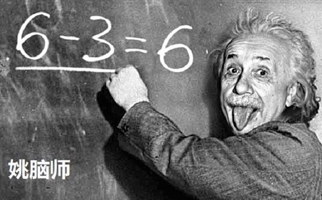
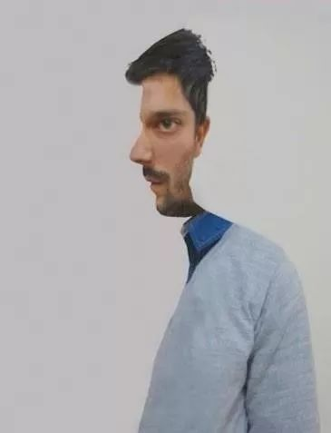
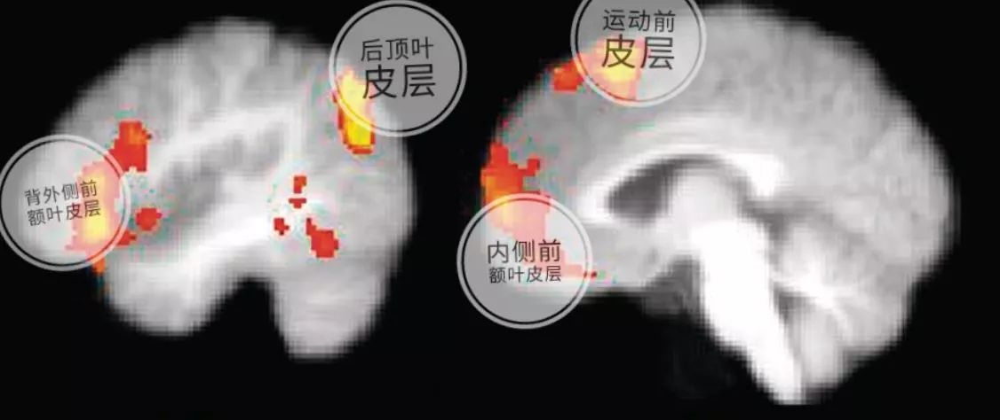

姚脑师本科是学生物的，因为听信了训练右脑可以开发智力的说法，从此便在训练右脑的道路上越走越远。在了解了右脑控制左侧身体的事实后，我就开始苦心钻研，尝试通过锻炼左侧身体来连带锻炼右脑。
于是从大二开始，我每天强行用左手持筷子。为了成为创造力无限的右脑人和脑洞大开的科学天才，我真的是耗尽心力开发自己的右脑。
可谓功夫不负苦心人，耗时两年时间，我可以自如使用左手拿筷子，写字，画画。结果没想到真的IQ爆表，直博心理学，如今走上了高（lèi）大（qióng）上（cǎn）的学术之路～
喂！等等，你这就要去拿筷子了吗？我故事还没讲完……
大家可能都接触过所谓左右脑人的测试。其中一些测试会展示一些模棱两可的图片，然后让读者判断图片的内容。比如，在下图中，如果你第一眼看到的是侧面人像，那么你就是左脑人；如果第一眼看到的是正面人像，那么你就是右脑人。

再比如，如果你第一眼看到这个舞者顺时针旋转，那么你就是右脑人；相反，如果你第一眼看到这个舞者逆时针旋转，那么你就是左脑人。
**所谓的左右脑人理论，通俗一点说就是左脑负责与逻辑分析相关的活动，而右脑则掌管直觉创造的活动。**正是因为左右脑的分工，人们就习惯性的认为擅长逻辑分析，思考问题比较理性的人左脑比较发达；而创造力异于常人，情感也比较细腻的人右脑比较发达。介于两者之间的，就是那些左右脑开发比较均衡的人。
在现实生活中，人们认为左撇子的右脑很发达，有高于常人的智商，更容易获得成功。比如文艺复兴艺术家达芬奇、科学女神居里夫人、美国总统奥巴马、微软创始人比尔盖茨等都是有名的左撇子。咋一看，用锻炼左手的方法来开发右脑好像是一个非常好的主意。
1 残酷的真相
有这么简单易行的健脑方法，科学家禁不住诱惑一定要验证一下。早在1976年，几位脑科学家对7688名学生进行了调查，来比较左撇子和右撇子在智商和认知能力上的差别[1]。结果他们发现主要使用哪只手跟智商没有半点关系。
虽然有很多成功人士确实是左撇子，但是右撇子的成功人士更是不胜枚举。二者的比例和人口中左撇子和右撇子的分布并无明显差异。
自从姚脑师接触了心理学之后，也发现楼上那些脑测试图片只是一些视错觉的小游戏：
比如，正脸侧脸的错觉跟你第一眼看在图片上的位置有关。如果你第一眼看的图片的左侧，大脑就会自动识别出侧脸的轮廓；而如果第一眼看在图片右侧，大脑就会自动把耳朵考虑进去并把图片识别为正脸的一半。 大多数人可能会觉得旋转舞者是以顺时针旋转。这主要是因为视觉系统习惯以从上往下的视角来解释旋转。如果把舞者上本身遮住，闭眼几次就很有可能反转。
神马！难道换个角度看图片，我的脑子就左右互换了吗？
当然不是。所谓的左右脑优势论其实是站不稳脚跟的。
2 门当户对，认知到位
根据左右脑优势论，“左脑人”的左脑神经网络比右脑更加复杂且更有效率；反之，“右脑人”的右脑神经网络较左脑更为发达。这就好比是上海和杭州的地铁网络，上海好比是更加发达的那一半，自然运行起来也较为复杂，但是功能更加齐全，交通更加便利。而杭州就是不发达的那一半，简单的路线只能提供相对有限的交通服务。

为了验证这个假说，脑科学家尼尔森和他的同事们[2]在2013年做了一个实验。研究分析了1011个大脑在静息态（resting state）下神经网络的活动。他们发现左右脑的神经连接总体来看并没有什么显著的不同。所谓脑的功能侧化（lateralization）只发生在局部或者亚网络中。
由此可见，**左右脑不存在孰优孰劣之分，而是均衡发展的。**这并不奇怪，因为几乎所有的认知过程都是要靠他们共同协作完成的。
3 左右搭配，干活不累
只有左右脑共同协作，大脑才能最有效率的完成各类任务。举个栗子来说，左右脑就好比是生活中的小两口，如果只是女人做饭，男人葛优躺，那这劳动力可就浪费了。女人做饭再厉害也没有三头六臂。如果男人能发挥体力上的优势打打下手，切个菜、刷个碗什么的，不仅做饭的效率有提高，还能增进小两口的感情。
这种充分调动现有资源，以低能耗完成复杂任务的认知方式是最符合自然规律的。
即使是传统上公认单脑为主的认知过程，现在也逐渐发现是要左右两个脑分工合作才能有效完成的。比如创造力（creativity）一直被认为是右脑为主的功能。在2012年，几位神经科学家[3]设计了一系列实验要证实右脑对创造力起着至关重要的作用。在实验中，被试人被要求做需要创造性的任务。他们要发挥想象力用三个图形创造出各种新颖的画面（如一个笑脸）；而在非创造性的对照任务中，被试只需要在脑海中旋转各种图形，不需要创造出新的图案。
他们预测，右脑相关区域在进行创造性任务的时候，会比在进行非创造性任务的时候更活跃。
结果他们被打脸了。
创造性的任务反而更多的激活了（见下图）左脑的后顶叶皮层（posterior parietal cortex），运动前皮层（premotor cortex），背外侧前额叶皮层（dorsolateral prefrontal cortex）以及内侧前额叶皮层（medial prefrontal cortex）。

也就是说，创造性的解决问题不光要依靠发散性思维（右脑）来寻找解决问题的方案，还需要对这些方案进行计划（左脑运动前皮层）和组织（左脑背外侧前额叶皮层），并存储在工作记忆中（内侧前额皮层）。
那锻炼左手能不能至少增强右脑为主的发散性思维捏？
呵呵你想多了。
4 天才不是吃出来的
大脑的成长遵从「用进废退，有的放矢」的原则。某方面能力锻炼的越多，就会生成更多的神经元连接来支持这个功能，使得那方面变得越强。
这就好比是一个城市的交通系统，市民的出行需求增加时，政府会相应的修建更多的出行路线。线路越来越多该城市就能满足更大的交通需求。
但是政府在在修路时也会考虑到道路的成本和收益，以及利用率，不会在缺乏交通需求的几百人口的小镇上大兴土木修路。
大脑也是一样。左手持筷子吃饭能锻炼右脑有关左手运动的区域，但并不会连带影响那些和创造力相关的区域。
所以姚脑师当年的 “修行”，除了把自己练的（左手）肌肉发达之外，头脑其实还是依旧简单。
要想真正地增强自己的创造力，除了多经历，多思考，多进行创造性的活动之外没有捷径可走。
因为天才不是吃出来的，是开脑洞开出来的～